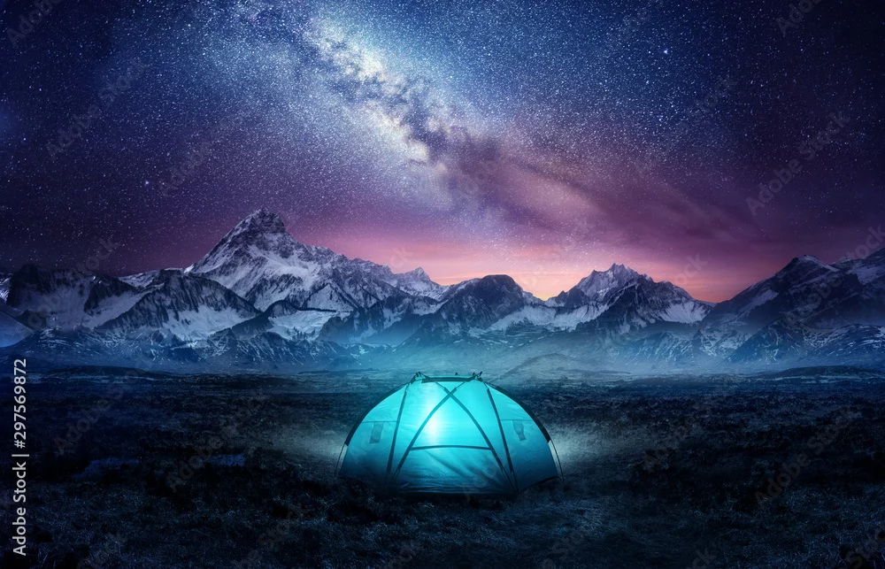

Camping is like staying in a primitive cabin, minus the cabin itself. So, in addition to your tent, pack as though you're going to stay someplace where there's little or no furniture, no electricity, no stove or refrigerator, and the cupboards are bare. In a developed campground you will have running water and a community bathroom a few hundred yards away. A typical campsite has a table (if not, you'll want to bring one), a place to park a car and a place to pitch your tent.
Choosing the right clothing is key to staying warm and comfortable on your camping trip. First, you'll want to factor in the weather. If the forecast includes rain, consider a rain jacket and rain pants. If it's slated to be sunny and hot, bring a hat and UPF clothing. (Related reading: How to Choose Sun-Protection (UPF) Clothing) You'll also want to consider your clothing's materials. Cotton is usually a no-no because wet cotton can make you cold and miserable, even in surprisingly mild weather. Do bring a warm coat, and consider bringing long underwear, gloves, a beanie and warm socks for nighttime (you can tailor this to the weather and how cold or hot you run). Also pack some sturdy shoes with solid traction for any hiking you do around camp. Related reading: What to Wear Hiking